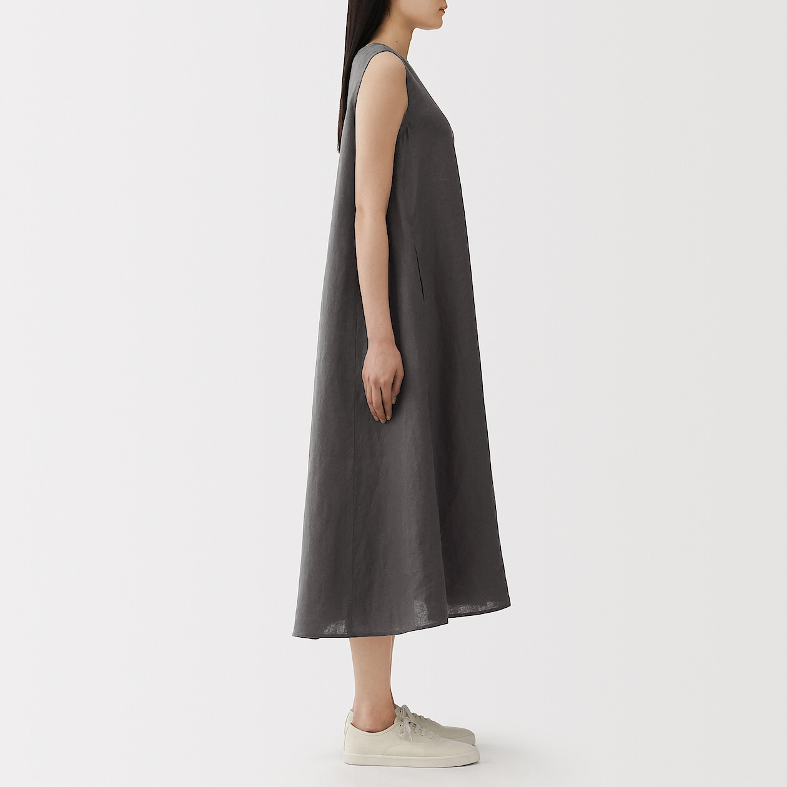

Most clothing attempts to communicate. A logo, a trend, a cultural reference. The MUJI Linen Collection chooses silence instead.
Founded in Japan in 1980, MUJI — the full Japanese name is "mujirushi ryohin" — stands for "no brand, quality goods." The vision was to offer truly useful products reflecting a thoughtful balance between good living and necessity.
It removes unnecessary information. It strips away decoration. It reduces clothing to proportion, texture and utility.
The result feels less like fashion and more like architecture for the body.
The Material Itself
Linen has always carried a certain honesty. It wrinkles. It ages. It reveals use rather than hiding it.
MUJI embraces these qualities instead of correcting them. The fabric feels breathable, dry and substantial. Present without being loud.

Why It Matters
Most contemporary products are designed to attract attention. This collection does the opposite.
Its appeal comes from restraint. A refusal to participate in visual excess.
That philosophy increasingly feels luxurious.
Fit & Everyday Use
The silhouettes remain relaxed without becoming oversized. The garments move naturally and improve through repeated wear.
Unlike highly engineered technical clothing, their appeal comes from simplicity.
The experience feels slower, quieter and more intentional.

The MUJI Linen Summer Collection is memorable because it refuses to make a statement.
In an era of visual noise, that restraint becomes its own form of luxury.
Affiliate disclosure: This article may contain affiliate links. If you purchase through one of these links, we may receive a commission at no additional cost to you. See our Affiliate Disclosure for details.